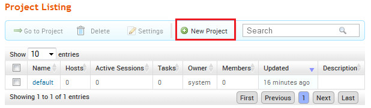
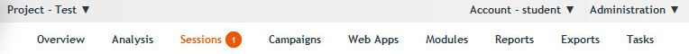
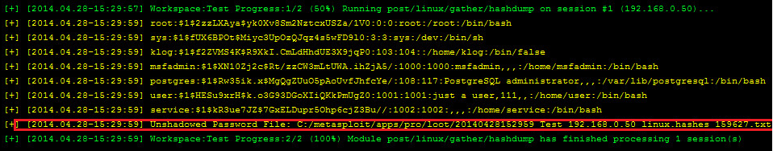

Exploiting Vulnerable Systems
Intro duction
Welcome to the Second part of the assignment that demonstrates how a vulnerable system can be remotely exploited and what an attacker may be able to do.
The objectives of this part
Obje ctives
- Understand the process of penetration testing for detecting vulnerable systems on a network.
- Gain an insight on how an attacker is able to directly and remotely exploit and gain control of a vulnerable system.
Tools
Metasploit

Metasploit is a penetration testing software that comes both in commmunity and professional versions. It is well known for its modular architecture as well as the ever-extending list of exploits to past disclosured vulnerabilities and payloads that enable the attacker to perform sophisticated actions against a compromised system
Tasks
We have installed on your system, the Metasploit Windows version that can be downloaded from http://www.metasploit.com. In case you run in problems using Metasploit, make sure that the Windows Firewall and Defender are disabled.
- Open your browser and access Metasploit by navigating to https://localhost:3790. If prompted, accept the self-signed digital certificate of the web application and continue.
- Login with the credentials Username:student Password:ict4dsec!
- Click on the New Project button

- Fill in a project name and optionally description of your choice. Make sure that the network range is 192.168.0.1-254. Complete by pressing the 'Create Project' button.
- Click on the Scan button. In the next screen, enter the IP address of 192.168.0.50 as the Target Address (this is the vulnerable system you have encountered in Assignment 1.Press the 'Launch Scan' button to initiate the scanning process.Wait until the task finishes.
- Navigate to the Analysis -> Hosts menu option.
- What Operating System does the system seem to have? How can the scanning tool be able to identify the Operating System of the remote system?
- Switch to the Services tab. The tool reported the open ports on the remote system as well as the services (even with the versions) that are running.
- How an attacker can leverage this information in order to exploit a system?
- Notice that the FTP service is backed up by vsFTPd version 2.3.4. Google a little bit about this specific version of the specific FTP software? Thinking as an attacker, can you find anything of interest?
- Switch to the Modules -> Search... menu option and type in the 'vsftpd' kkeyword.A result should pop up indicating a module specially designed for exploiting this specific vulnerability.
- Click on the title of the module in order to be presented with additional information.Specify the 192.168.0.50 IP address as the target one. In the payload option, select the Meterpreter option and in the Connection type select the Reverse one. Click on the 'Run Module' button.
- If the exploit has been successful and the payload injected, you should have a new Session in the menu. Click on the Sessions tab

- Click on the 'Session 1' label. Click on the Command Shell option. You now have terminal access to the remote system and you are able to issue various commands.
- Type the command 'pwd' in order to print the current working directory. The result '/' stands for the root directory in Linux.Create a folder after your last name as proof you have reached up to this step by issuing the command 'mkdir /' and then type 'ls' to list the newly created folder.
- Return back to the previous web page and switch to the post-exploitation modules. Locate the post/linux/gather/hashdump module and click on its label.Click the 'Run Module' button over the selected existing session.You should be able to see in the screen, the user accounts of the remote system as well as their hashed passwords.The tool automatically stores the extracted information in your VM and can be found at the reported location. Copy the file to your VM's Dekstop

- You can use a password-cracking tool such as John the Ripper in order to recover the passwords of the accounts present on the compromised system. Open a command prompt and navigate to the appropriate folder by issuing the command 'cd C:\Users\student\Desktop\john179j5\run\' and then issue the command 'john where stands for the previously tool-generated file (it is easier to drag and drop the file to the command shell in order to load its full path and file name).Soon,the tool should be able to recover the passwords (except of the root's one)
- Although not being able to break the root password, the attacker is currently connected under the context of the root account (Hint: Use the 'whoami' command at the shell of the compromised system. Why is this possible and how can an administrator avoid this?
- In the compromised system, we have aadded a file that is supposed to contain confidential data. Besides the attacker being able to read its contents, what could he do in order to exfiltrate the data to an external system?
- Make sure to return to the Sessions menu option and click on the Cleanup button in order to release the active session for the other students.